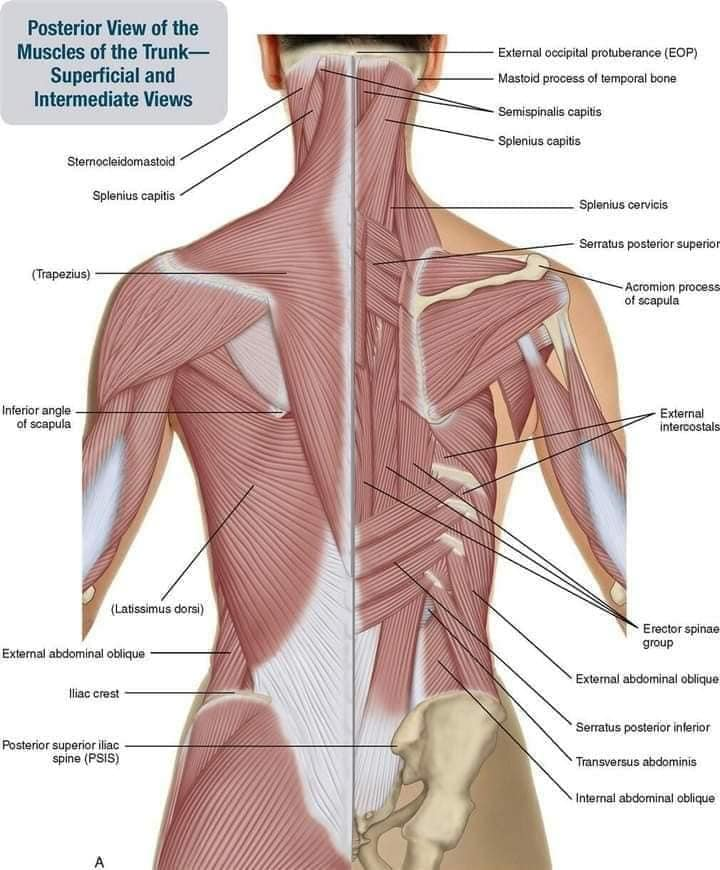

🙋：落枕怎麼處理？ 除了按摩還有其他辦法嗎？
🙋：落枕怎麼處理？ 除了按摩還有其他辦法嗎？
#落枕，泛指突發性後頸部肌群活動僵硬、疼痛，使頭頸部無法正常活動的症狀。
除了痛哪治哪，還有沒有其他可能？
人的身體是連貫系統，此類肩頸的問題，通常都與胸廓、肩胛有相關。辦公久坐得工作型態，更高機會出現此類疼痛，起因於該工作的肌群失能，連動其他肌群代償而造成疼痛的結果。
今天一位初診就是這種狀況，透過脈象快速切入找到起因是 #下背的無力，下斜方肌的無力失能使肩胛骨無法穩定在該有的位置，合併久坐的駝背體態，胸大肌胸小肌的過度收縮、胸椎活動度的喪失，合併大小圓肌的代償，導致這兩個月來反覆落枕。
有了診斷，治療就相對簡單，把下斜方的肌力喚醒，再針對大小圓的代償肌纖維釋放，治療全程完全沒有碰到頭頸部不舒服到部位，總共前後3針，再請患者活動肩頸，就釋放開了，頭頸活動自如、輕鬆自在！
落枕、膏肓痛是現代常見的酸痛病，當然並不是每個落枕都是如本案，疼痛成因各有不同，醫師需要透過問診、把脈與PE，找到真正的問題根源才能有效率的治療酸痛問題！
中醫師 黃彥鈞
太初中醫診所
